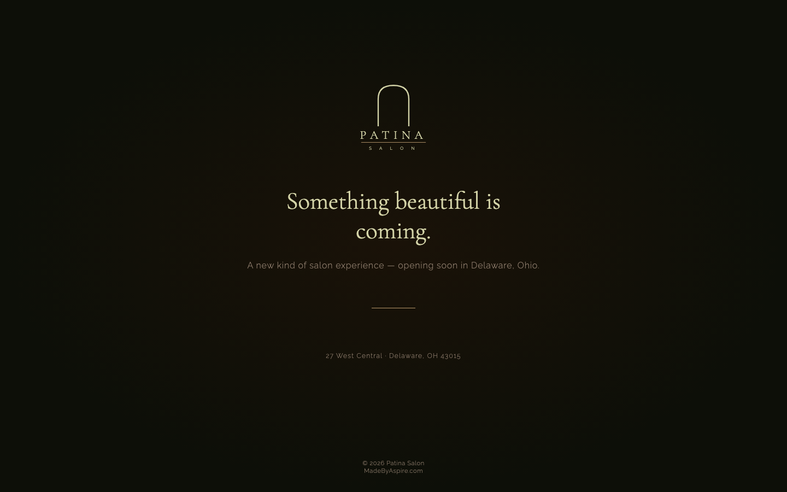

Some things take time to become what they're meant to be. Kayla Haddad spent years building her clientele as Kayla's Hair Studio — developing her craft, earning trust chair by chair, growing a book of loyal clients who came back not just for the cut but for the experience she created. When the time came to move into a real space at 27 West Central in Delaware, Ohio, she didn't just open a salon. She started over with intention.
The name Patina says everything. It's the quality that develops on brass and leather and marble over time — not a veneer, not a gloss, but genuine character earned through use. It's the exact metaphor for what Kayla has built: a salon run by four talented stylists, each with their own specialty and following, housed in a space designed to feel like an escape. Arched mirrors. Brass hardware. Warm light. The kind of place that feels expensive because the care behind every detail is real.
Aspire's job was to make the digital presence match that standard. Not a template. Not a generic salon page. A brand with teeth — one that makes a potential new client feel, before they've ever walked through the door, that this place is different. The work started with a name, a color story, and a belief that the right brand built right from day one changes everything about how a new business grows.
When Patina opened its doors, its digital presence was — deliberately — almost nothing. The coming-soon page at bookpatina.com was the only thing live. And that was a choice, not an oversight. It held the name, let it breathe, and set the tone without giving away anything premature. But search engines see a blank page the same way — and the gap between the physical space and the digital presence was the core brief Aspire was handed.

Captured April 2026 — bookpatina.com
Delaware, Ohio is a mid-sized college town with a well-established salon market. The competitor that matters most is 1820 Collective — 154 Google reviews, a 4.8-star rating, a website, and years of local SEO momentum. They're on William Street, a few blocks from Patina's West Central location. They're good at what they do and their digital presence reflects it.
But Patina has something 1820 Collective can't retrofit: a brand built intentionally from day one. 1820's digital presence grew organically over time — patchworked together, fonts and colors accumulated rather than designed. Patina is launching with a locked, cohesive identity that most established salons would spend years and multiple redesigns trying to achieve. The Aspire build doesn't just close the gap — it gives Patina a genuine aesthetic advantage.
The numbers favor 1820 Collective today — but those numbers are a function of time, not quality. Patina's brand architecture is already ahead. When the full site launches with individual stylist pages, structured data for each team member, and real booking links embedded, Patina will have a more sophisticated digital foundation than 1820 has after years of operation. Reviews are earned, not designed — but a strong site accelerates the earning.
Hair is one of the highest local-intent search categories that exists. When someone types "balayage near me" or "hair extensions Delaware Ohio," they are ready to book. Not browsing. Not comparing prices abstractly. They are moments away from opening a booking page. The question is only whether Patina is the one they find.
The keywords that matter for Patina span two tiers: high-volume local searches where new clients are actively looking, and specialty terms where each stylist's individual expertise becomes a direct SEO asset. Four stylists with four distinct skill sets means four separate pools of search intent — and the Aspire site is structured to capture all of them.
Most salons have one page and one set of keywords. Patina's individual stylist pages are an SEO force multiplier. Kayla's page targets extensions and vivid color searches. Elaina's page targets blonding and highlights. Meredith's page targets keratin and precision cuts. Emily's page targets color and extensions. Each page is a separate entry point into Patina's booking funnel — a client who finds Elaina through a blonding search becomes a Patina client even if they never searched "Patina Salon" directly.
The way people find local businesses is changing faster than most business owners realize. Google's AI Overviews now appear above organic results for service searches. ChatGPT and Perplexity are being used to answer "what's a good salon near me" questions. Voice assistants answer booking questions on the spot. None of these AI systems can recommend a business they can't find and verify.
Right now, Patina has zero AI search presence. No GBP, no indexed pages, no structured data. A potential client asking an AI assistant to recommend a balayage specialist in Delaware, Ohio would not be directed to Patina — because there's nothing to find. The Aspire build closes every one of these gaps by design.
Patina is the most complete brand launch Aspire has delivered to date. Not just a website — a full brand system. Identity to interface to physical signage, all from a single brief and a single team. Here's what's in scope.
Five-color palette anchored in espresso and brass. Cormorant Garamond headings, Raleway body, Playfair Display for accent moments. An arch mark logo that captures the physical space in a single shape. Brand guidelines delivered — not just a mood board.
Homepage, services, contact, journal/blog, and a full about page — plus four individual stylist pages, each with a bio, specialty highlights, portfolio preview, and a direct GlossGenius booking link. Built on Astro 6 with Cloudflare Workers for near-zero load times.
Dedicated pages for Kayla, Elaina, Meredith, and Emily — each one a standalone SEO entry point. Real bios, specialties, Instagram integration, and direct booking. The kind of page a stylist would share with every client they've ever had.
Each stylist's GlossGenius booking link is embedded directly on their individual page. No hunting for a booking link on a generic contact page — one click from stylist page to their specific calendar. Frictionless for the client, frictionless for the stylist.
Delaware, Ohio's Historic Preservation Commission requires approval for exterior signage in the historic district. Aspire prepared the full color rendering PDF for Kayla's submission — the right colors, dimensions, and materials documented for the commission review.
A living design library at docs.madebyaspire.com captures every brand decision — swatches, type scales, logo usage rules, photography direction, and tone guidelines. Kayla has a reference she can hand to any future vendor and say: "match this."
Every color was chosen to evoke the physical experience of the space. Espresso grounds the identity. Brass adds warmth and the feeling of high-quality hardware. Cream keeps it breathable. Driftwood — an aged, weathered green-gold — was the surprise: it adds depth without competing.
The Aspire process for a brand-new business launch is different from a redesign. There's no existing site to constraint the design, no old brand to fight against, no legacy SEO structure to preserve. That's a gift — and we use it. Here's how the Patina engagement has unfolded and where it goes next.
A beautiful website is the foundation — but the businesses that grow fastest treat their digital presence as a system, not a project. For a new salon launch, the opportunities beyond the website are especially high-leverage: Patina is starting from zero, which means every channel established early compounds for years. Here's what we're building alongside the site.
The highest-priority move for any new local business. A verified GBP is what puts Patina on Google Maps, in the local pack, and in AI search recommendations. We set it up on launch day — complete profile, photos, and categories — not as an afterthought.
The first 20 reviews are worth more than the next 200. A structured ask sequence — built into the booking confirmation flow and stylist follow-up — means Patina isn't starting cold. The goal is a meaningful review count within the first 60 days of launch.
Kayla's @kaylahaddadhair account is already active. The opportunity is coordinating a Patina Salon brand account alongside the four individual stylist handles — so the salon has a unified presence while each stylist retains their personal following.
Booking systems are only as good as how they're surfaced. We embed each stylist's GlossGenius link directly on their page, add booking CTAs above the fold, and make sure the path from "I found Elaina's page" to "I booked an appointment" is one tap — not three screens of navigation.
A client who books once through the website and never hears from Patina again is a lost opportunity. GlossGenius has built-in retention tools — rebooking reminders, post-visit follow-ups, seasonal promotions. Setting these up from day one means retention is automatic from the first appointment.
The Historic Preservation Commission application is in progress. When approved, Patina's exterior will carry the arch mark and wordmark in the locked brand colors — connecting the physical space on West Central to the same brand identity that lives at bookpatina.com.
Revenue projections for a new salon are speculative by nature — there are too many variables in how quickly a team builds its book. But the compounding logic of a strong digital foundation is well-documented, and it's worth mapping out the shape of the opportunity.
A new salon with a strong web presence doesn't spend years building word-of-mouth from scratch — the web does that work for them. The traditional path is: open, rely on existing clients, grow slowly through referrals, hope someone Googles you. The Aspire path is: launch with a full digital presence, show up in search from day one, let GBP and reviews do the referral work at scale.
At a conservative average of 5 new bookings per month across the salon — sourced from search and Maps — that's roughly $600–$800/month in revenue that wouldn't have happened without a digital presence. At 10 new bookings, that figure doubles. Neither number accounts for rebooking: a client who finds Meredith through a search for "keratin treatment Delaware" and books once has a strong chance of becoming a long-term client. The lifetime value of a hair client who books four times per year at $150 is material.
And this doesn't account for the brand value that accrues when Patina's visual identity consistently communicates luxury and craft. Premium aesthetic = premium pricing. A salon with a strong brand charges more — and keeps clients who value that positioning. The identity Aspire built isn't just a website asset; it's a pricing signal.
The chart above isn't a revenue chart — it's a search visibility curve. Reviews compound. Indexed pages compound. GBP engagement compounds. The salon that builds this foundation in month one has a 12-month head start on any competitor that decides to "get serious about their website" next year.
Most web agencies sell websites. Aspire builds digital foundations — and for a new business, there is a meaningful difference. A website is a deliverable. A digital foundation is a system: brand identity, search presence, booking architecture, and the structural decisions that make everything else easier for years.
The Patina engagement is the clearest expression of what Aspire does at its best. We came in before the salon was open. Before there was a website to redesign. Before there was a GBP to optimize. We built the identity, made every early decision deliberately, and created a system that will serve Kayla and her team as they grow from a new salon to a Delaware institution.
Brand to website to signage — everything in one place, with one team who cares as much as you do. Tell us what you're building and let's talk about what's possible.
Book a Free Strategy Callor email Chris directly at Chris@aspiredigital.dev